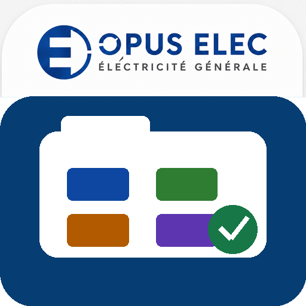

VOTRE ÉQUIPE SUR LE TERRAIN
Chantiers de l’entreprise
Chargement de la bibliothèque…
OPUS ELEC / ESPACE ÉQUIPE
Feuilles de chantier, commandes, photos et attestations au même endroit. Connectez-vous avec votre compte professionnel OPUS ELEC.
Découvrir l’interface en démonstration
Un chantier, toutes les attestationsBAES · CFO · CFA · SSI
Consignation · Intervention
Réserves · Suivi · Visite avant devis
VOTRE ÉQUIPE SUR LE TERRAIN
Chargement de la bibliothèque…